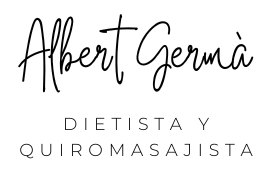
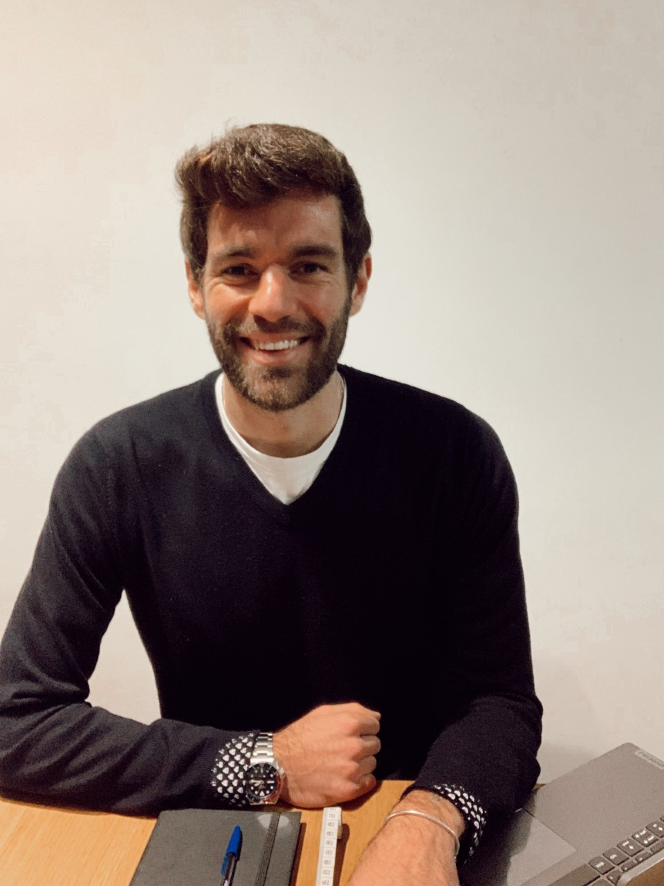
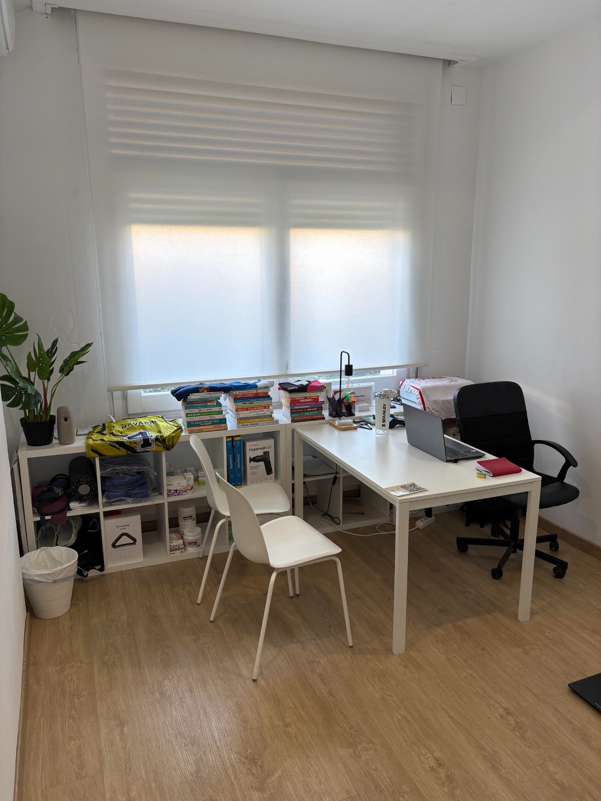

Pérdida de peso y composición corporal
Mejora de la composición corporal con objetivos realistas y estrategias que puedas mantener más allá de una dieta temporal.
Quiero mejorar mi composición corporal →
DIETISTA · QUIROMASAJISTA
Te acompaño a mejorar tu composición corporal, tu salud y tu rendimiento con una estrategia personalizada, realista y basada en evidencia científica.


UNA NUTRICIÓN DIFERENTE
Cada persona tiene unos objetivos, unas necesidades, unos horarios y una relación diferente con la alimentación. Mi trabajo consiste en entender tu situación, explicarte el porqué de cada decisión y construir contigo una estrategia que puedas mantener en el tiempo.
NUTRICIÓN
Un mismo enfoque: rigor, personalización y educación nutricional.
Mejora de la composición corporal con objetivos realistas y estrategias que puedas mantener más allá de una dieta temporal.
Quiero mejorar mi composición corporal →Alimentación adaptada a tu entrenamiento para favorecer rendimiento, recuperación y ganancia de masa muscular.
Quiero mejorar mi alimentación →Educación nutricional y estrategias alimentarias orientadas a mejorar hábitos y determinados marcadores de salud cuando corresponda.
Quiero hablar de mi caso →MI MÉTODO
No quiero que dependas de una hoja con alimentos permitidos y prohibidos. Quiero que entiendas cómo funciona tu alimentación y que aprendas a tomar mejores decisiones por ti mismo.
SOBRE MÍ
Dietista · Quiromasajista
Llevo 7 años acompañando a personas en procesos relacionados con la alimentación, la composición corporal y la mejora de hábitos.
Mi formación incluye el CFGS en Dietética, un Curso Profesionalizador en Nutrición Deportiva por la UOC, un Máster en Obesidad y Enfermedades Cardiometabólicas según el Método CORE y formación en Quiromasaje en Escuelas CIM Barcelona.
QUIROMASAJE
Sesiones de quiromasaje adaptadas a tus necesidades, con un enfoque profesional y personalizado.
Consultar una sesiónPara favorecer una sensación de bienestar y relajación.
02Trabajo manual orientado a aliviar la tensión muscular.
OPINIONES DE GOOGLE
Una selección de opiniones reales de mi perfil de Google.
Treballar amb l’Albert ha estat una experiència molt positiva. Ha estat proper, clar i realista en tot moment. Gràcies a la seva guia, he aconseguit els objectius que m’havia proposat.
— PauEstic molt contenta amb l’acompanyament de Albert. M’ha ajudat a apropar-me al meu objectiu d’una manera realista i sostenible, adaptant el pla als meus horaris i al meu dia a dia perquè pugui crear bons hàbits. El seguiment és excel·lent: sempre està disponible per resoldre dubtes. La recomano molt!
— CarolinaAlbert es muy profesional y cercano. Te escucha, se adapta a tus necesidades y, además, sabe motivarte y acompañarte durante el proceso. Hace que mejorar tus hábitos sea mucho más fácil. Recomendable 100%.
— MontseQué suerte encontrar profesionales como él. Trabaja con dedicación, pasión y conocimiento! Sin duda, volveré siempre que lo necesite! Los masajes son de 10!!!
— AnnaVaig anar derivada per el meu fisio que em va recomanar augmentar la masa muscular i reduir la inflamació intestinal. Als 15 dies ja vaig començar a notar resultats tant en inflamació com en rendiment al gimnàs. Ha estat atent des de l’inici per qualsevol dubte. El millor ha estat que no només m’ha fet la dieta sinó que m’ha ensenyat a menjar per així no dependre de ningú. 100% recomanable per gent amb qualsevol condició o patologia.
— RosamariaGracies a l’Albert vaig aprendre a mantenir una alimentació equilibrada i adaptada a les meves necessitats i desitjos. Es un gran professional i ajuda a cumplir amb els objectius d’una manera molt propera. El recomano 100%. Moltes gracies per tot Albert ☺️
— MariaAlbert!!!! Gran profesional, me ayudó con pautas de alimentación para perder peso, excelente seguimiento y resultados, además excelente masajista. Muy recomendable.
— DavidExcel·lent. M’ha donat unes pautes molt ben explicades i amb molt de detall. Molt proper i entenedor en les explicacions. 100% recomanable.
— Ressenya de GooglePREGUNTAS FRECUENTES
Sí. Puedes venir a la consulta en Sabadell o hacer el seguimiento online desde cualquier lugar.
El objetivo es adaptar la estrategia a tu situación, preferencias, horarios y objetivos. La educación nutricional forma parte importante del proceso.
Pérdida de peso, composición corporal, ganancia de masa muscular, nutrición deportiva, hábitos y educación nutricional, además de determinados objetivos relacionados con salud y analíticas.
La vía más directa es escribirme por WhatsApp. Cuéntame brevemente qué buscas y te orientaré sobre el siguiente paso.
ONLINE
Consulta y seguimiento online para personas que viven fuera de Sabadell y fuera de Cataluña.
Consultar →¿HABLAMOS?
Escríbeme por WhatsApp y cuéntame brevemente cuál es tu objetivo. Te responderé personalmente para orientarte sobre el siguiente paso.